Savez-vous compter les choux ?

CanardMasqué, les maths ne m’aiment pas !!!
Mais je croyais que vous vous étiez réconciliés…
Que s’est-il passé ?
On a eu un contrôle où on devait calculer des durées, et j’ai eu tout FAUX !!!!
Pourtant je suis trop bon en calcul mental ! 
On va voir ça : que devais-tu calculer au juste ?
« Sachant que Benoit a révisé 1,5 h lundi, une heure et quart mardi, et 2h30 vendredi, combien de temps a-t-il passé sur ses devoirs cette semaine ? »
Ok, et tu as répondu quoi ?
Ben, j’ai additionné
Ah oui je vois, tu as additionné des choux et des carottes, quoi !
QUOI !!!
J’ai additionné des heures et des minutes ! C’est quoi le problème ???
Le piège était dans l’énoncé, toutes les durées ne sont pas données dans le même système numérique, et on ne peut pas les additionner telles quelles.
Système numérique ?!!

Regarde : 2h30, c’est le système numérique spécifique au comptage du temps, c’est-à-dire en base 60, ou sexagésimale…

Alors que 1,5 h, c’est le système décimal, ou base 10, et on ne les additionne pas de la même façon…
Normalement on n’utilise pas le système décimal pour compter les heures, ce n’est pas pratique.
Si on compare, on a 0,5 h = 30 min… ça ne correspond pas, et pourtant c’est la même durée ^^
Tout est une question de regroupements, et de comment tu les fais.
Mais c’est quoi ce truc de naze ?
Pourquoi on ne compte pas tout pareil ???
Pour des raisons pratiques 
La base 10 vient du fait qu’on a 10 doigts : elle est très ancienne.
Ben ouais c’est pratique pour compter sur les doigts !
Quant à son écriture… On a retrouvé des traces d’un système de notation décimale dès le IIIe millénaire avant J.-C. chez les Égyptiens…
Dans ce système, les multiples de 10, de 100, etc., sont des repères : on considère que dès qu’on a 10 unités, on a une dizaine. Avec 10 dizaines, on forme une centaine…

Ils sont stylés, les chiffres en hiéroglyphes !
Cette organisation, par regroupement de multiples de 10, se retrouve dans notre manière d'écrire les nombres… Les puissances de 10 et leurs multiples sont des briques dans le découpage de l’écriture des nombres…
Oui on les écrit les uns à côté des autres, normalement, quoi !
Hmmm… Ceci dit la valeur d’un hiéroglyphe ne dépend pas de sa position dans l’écriture, contrairement aux chiffres dans notre notation, et…
Heu… tu t’emballes pas un peu, là, CanardMasqué ? on calculait du temps…
Oui oui, pardon
Donc
Pourquoi on ne mesure pas le temps de la même façon ?
Parce que c'est un héritage…
Dès l’Antiquité, les humains avaient remarqué l'existence de cycles temporels en observant les astres : un cycle lunaire, de 30 jours environ, qui correspond aux mois et qui se répète 12 fois au sein d’un cycle solaire, qui lui correspond à l’année.
La division du jour en 24 heures est, elle aussi, très ancienne… Tout a commencé avec les Sumériens, les habitants de l’ancienne Mésopotamie (région située entre le Tigre et l’Euphrate), qui, 2000 ans avant notre ère, se sont mis à diviser leur journée, d’abord en 6 périodes : 3 durant le jour, 3 durant la nuit, puis en 12 périodes.
12 : comme le nombre de mois dans l’année ?
Oui, et aussi parce que le chiffre 12 est divisible par 2, 3, 4 et 6, ce qui est bien pratique.
C’est vrai que c’est pratique, ça fait des demis, tiers, quarts, etc.
Les Égyptiens ont encore affiné le découpage en divisant leurs journées en 24 heures qu’ils savaient mesurer la nuit, en observant la course des étoiles.
La division de l'heure en minutes, et de la minute en secondes, remonte aussi aux Sumériens. Mais elle est plus récente (de 100 à 300 ans avant J.-C.)
Pourquoi avoir divisé cette heure en 60 minutes, puis en 60 secondes ?
Parce que les Sumériens comptaient en base 60 et non, comme nous, en base 10.
Ils avaient remarqué que le nombre 60 a beaucoup de diviseurs (2, 3, 4, 5, 6, 10, 12, etc.) : cela permet de faire plein de divisions facilement.
Mais pour compter sur les doigts, c’est raté !
Eh bien figure-toi qu’ils y arrivaient !
Ils avaient 60 doigts, à l’époque ???
(flippant !)
Non, rassure-toi
Ils ont utilisé les 5 doigts de la main gauche, en les associant aux 12 phalanges de la main droite.
On ainsi obtient un total de 60 possibilités.
Hummm…
donc si je veux compter jusqu'à…
mettons 42…
Tout à fait !
Et pour en revenir à mon exercice, alors ?
Oui, oui, bien sûr !
Mais à présent que tu as repéré les différences de systèmes de numération de l'énoncé, tu devrais savoir le faire tout seul, non ?
Alors…